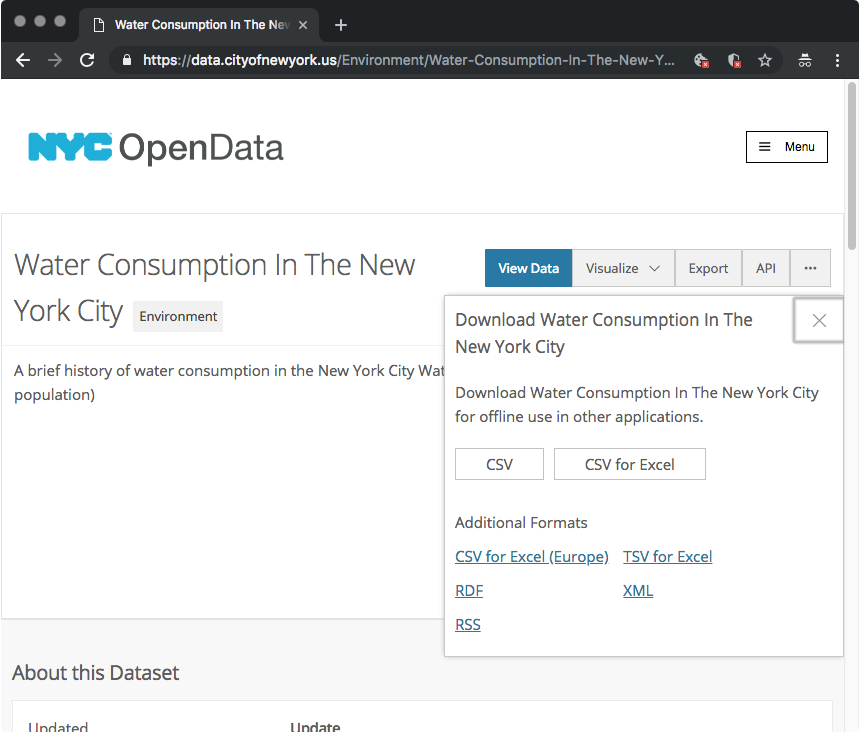

Last week we used an array of cat sizes to demonstrate drawing data using a list of values.
That was the first step in creating a data visualization. This week we'll look at how to take data from a resource and read it in p5. Then we'll learn to visualize that data.
Specifically, we're going to read data from a
A CSV files is like an Excel Spreadsheet, but simplified to be only the raw data, making it easier to read with code. Any Excel or Google Sheets files can be saved as a CSV.
Part of the assignment for this week is to find a data source to visualize.
Any CSV files can be used for the assignment, but we'll look at a few specific resources where data can be found.
There are many other data sources available on the web, these are just a few examples. I encourage you to search for other data sets and share them with the class.
For this example, I'm going to use a relatively simple dataset from NYC Open Data, Water Consumption In The New York City which has three data points for each year from 1979 to 2019, the population of New York, the water consumption in millions of gallons per day, and the gallons per person per day.
Once I've found a dataset I want to work with, I can click the Export button and then click CSV to download a CSV.
Once I have downloaded the CSV I can place it in my project folder next to
CSVs can be viewed in text editors, but it is easier to view them in Microsoft Excel, which formats them into a table.
After viewing the data in this CSV, I noticed an issue—the data was not in chronological order. Using Microsoft Excel, I sorted the data based on the year, in the first column. That will make it easier for me to view the data in order in my sketch.
Note, if you need to sort data, Excel may prompt you to sort either the entire dataset (Expand the selection) or just the single column. You should choose the entire dataset, or
Now I can read the data in my sketch.
Beacuse the CSV is an external file, we'll use the preload function to load it before running the sketch.
We will also use the loadTable function to load the data. View the reference on loadTable for more info.
In order to read the data, we use a few methods that are part of the water object created by the loadTable function.
water.getRowCount() This gives us the total number of rows in the data (excluding the header). We can use that as the ending condition for our loop.
Inside the loop, we can then use i as the row number and read the data at each row.
water.getNum(i, 'Year');This gives the value of the 'Year' column at each row, which we know is a number. For a string value, we would use water.getString().
water.getNum(i, 3);This gets the Per capita value of water consumption. We can reference columns by number or by the header title.
Notice that i divided the number of gallons by 4. The number itself is pretty large, so I wouldn't be able to fit my whole chart in the canvas if I just used the raw number. I have to play around with values to find one that represented the data and fits the overall size of my chart.
Since I'm using a loop, all of the values are divided by the same number, so I know I have an even representation of data.
What we can see in the chart is that the overall consumption of water per resident has gone down.
However, we know the population is going up. How will the chart change if we show the total amount of water instead?
Today we'll focus on just getting the data to display in the canvas, in the next class we'll look more into visualizing the data using code.